Code
setwd("Desktop/andrew-home/neighborhood_types/")In this lab, we’ll explore some of the basic workflows which we’ll use over the course of the semester to package and share analysis. A primary principle of our class is that our analysis be reproducible by others - this is an important prnciple both for supporting the validity of our arguments, and also accountability to those neighborhoods and communities we are analyzing and to the broader audience who may use our work in their deliberation or who might adapt our workflows to address similar questions in their areas of focus.
Our class will focus on developing data analysis and sharing pipelines that make use of R and RStudio’s core functions. We’ll gain familiarity with RStudio’s Quarto format which allows for the integration of plain text, code, and code output in the same documents and which is focused on easily translating text and code into multiple output formats. We’ll also become more familiar with Github, which we’ll use as a tool to share code and analysis.
Let’s get going…
If you have not already done so, follow this link to accept the lab Github Classroom assignment repository.
The first workflow we need to develop is proper project setup in R. In our next lab, we’ll add some more complexity to this project setup by incorporating version control and sharing, but we’ll start by getting a handle on projects that reside on our local computer. Let’s start with a quick review of file system and structure, and then transition into the nuts and bolds of project setup.
When you started learning R and RStudio, you likely struggled a bit with some of the core concepts related to how R views your computer’s file system and where it looks for files and stores work. There’s nothing to complex about what R is doing, but as computers have become better at making sensible decisions for us, it can be easy to lose track of some of the basics of how we need to set up file structures that help us to actively manage our workflows and outputs.
There are a few basics which we need to have down. The first is a gentle reminder about how computer file systems work. Back when I was a kid in the early 1980s, the primary way we interacted with computers was at the command line. When you started a computer, you might be greeted with something that looks like the terminal tab in your RStudio session:
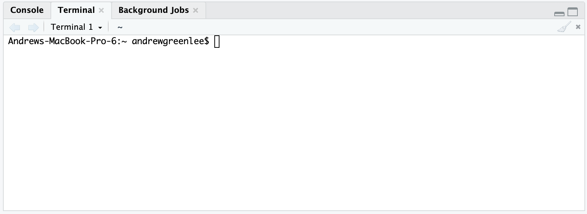 From here, you’d type commands to either navigate between directories, list files in a directory, or execute files. For instance, we can use ls to list all the files in my home directory: 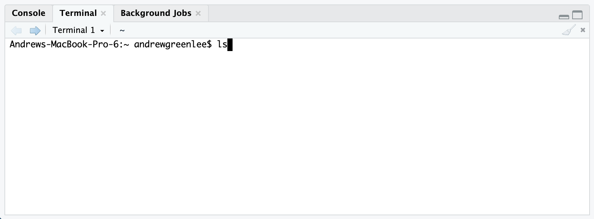
And then take a look at the results: 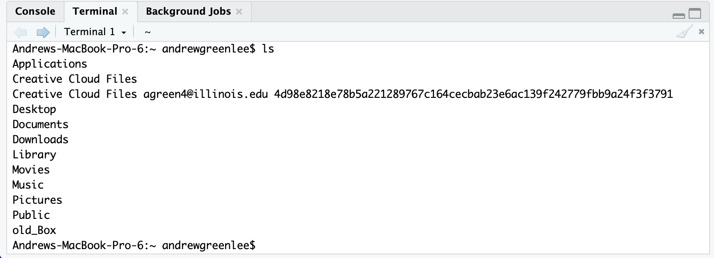
Which is the equivalent of looking at what files are in my computer’s home directory in a graphical user interface: 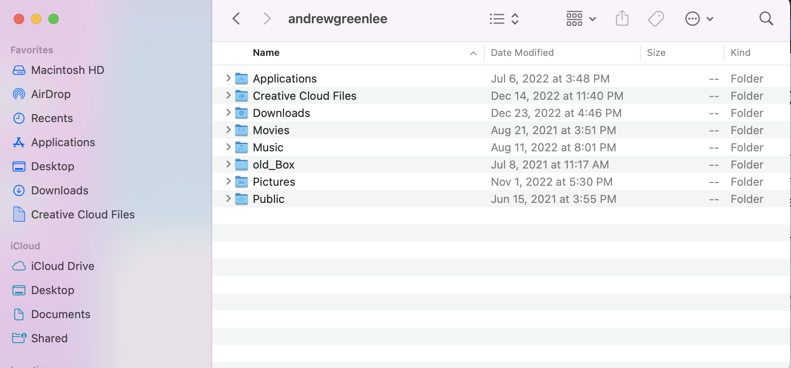
While for the most part we wont be bothered with accessing our file system this way, it’s useful to understand what’s going on with the pathnames that are shown. Whether you’re used to working with Mac, PC, or Linux operating systems, the approach to file systems is sufficiently similar to talk about them all together.
Most modern operating systems operate using relative pathnames which allow us to be more efficient in referencing where files are located in our computer. The path that you saw above on my computer points to the “home directory” which is the base directory associated with my user account on the computer. My home director is situated however within other directories that are part of the operating system and that are ultimately on a hard disk drive.
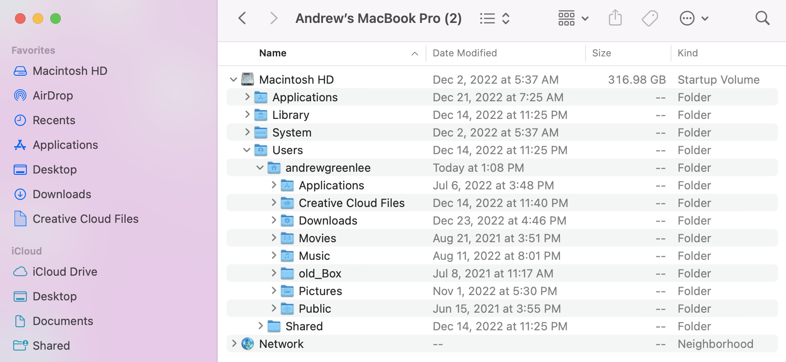 So why is all of this important? This underscores the rationale for and utility of relative paths in our filesystem. My mac computer’s home directory is Machinsosh HD/Users/andrewgreenlee/ which means that rather than having to type out all of that content, I can just start instructions to paths beloww that directory. For instance, let’s navigate to my desktop folder: 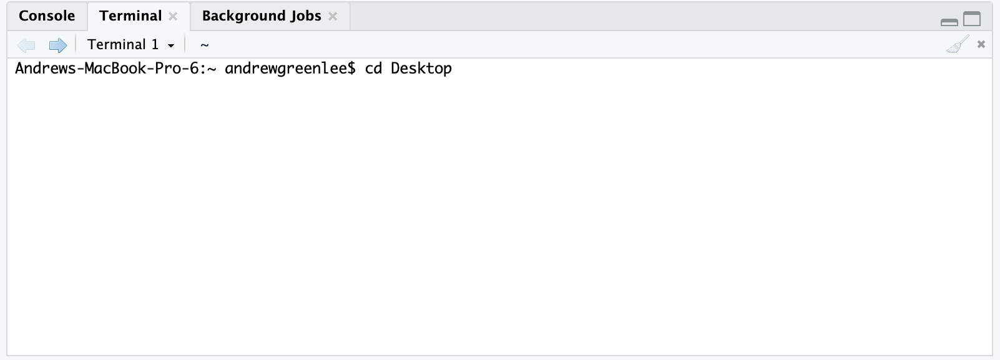
Which is the same as navigating from the root folder of our hard drive to the desktop folder: 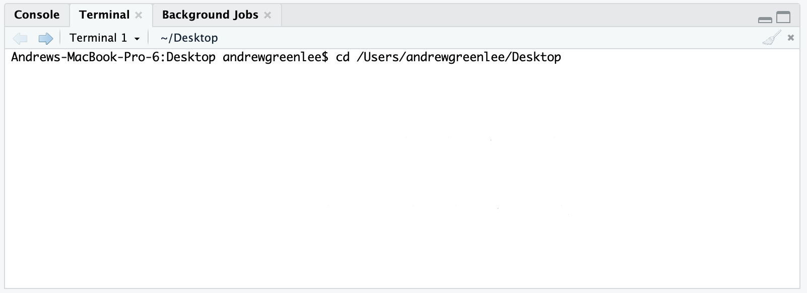
This certainly makes things more convenient for navigating files in Terminal and in our file system. It has a much deeper utulity when we are thinking about reproducible data analysis. Let’s explore in more detail.
Oftentimes when people begin learning in R and RStudio, they simply open the program and start typing commands. This works well up until the point when one needs to get data into or out of R. In general, R is agnostic about where to look for files - if you open RStudio without specifying where to look for files, it assumes you want to work out of your home directory (the getwd() command returns the current working directory R is using): 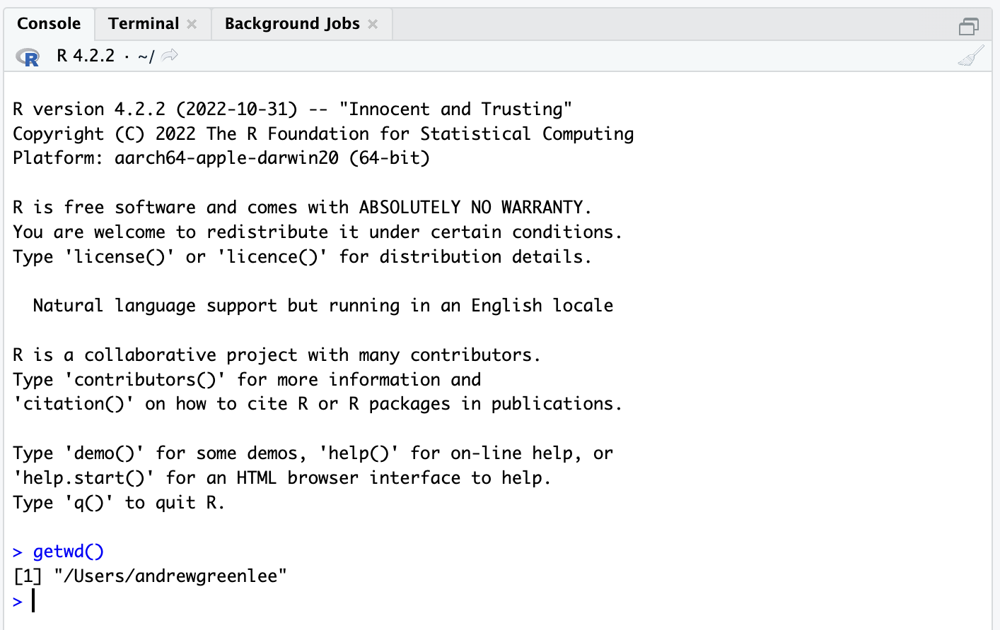
We typically do not want to work out of our home directory, but would like to set another directory to work out of. When new R users start to work in R, many are taught to use setwd() to explicitly set a directory to work out of. This will work, and sets a “home” directory for the particular work you are doing.
For the sake of illustration, let’s say we wnat to open a dataset containing a list of community area definitions for Chicago:
We create a script in our working directory that sets the directory, reads the file, and then shows the file to us.
What happens when you move your working folder to another computer or share it? If you explicitly set your working directory, it won’t be able to access that directory which is at a path that doesn’t exist on your other computer:
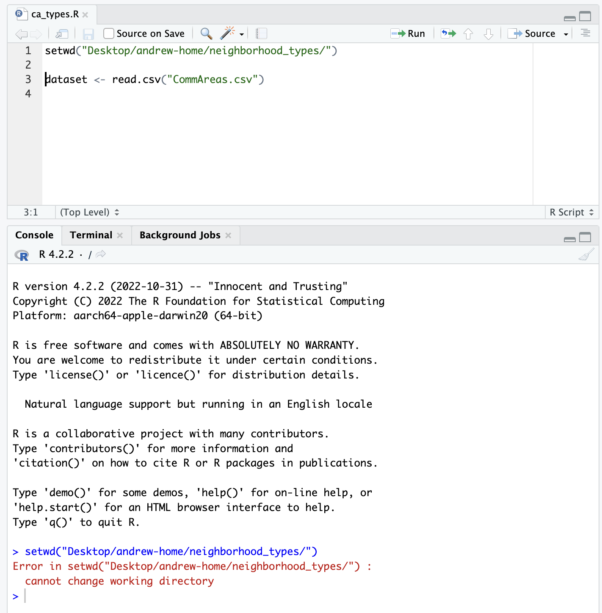 R Projects help us to address this problem. Projects add a file to the folder we wish to set as our home directory for our project which establishes where R will look for files.
In the right top corner of your RStudio window, you’ll note a blue cube which leads to a project management menu:
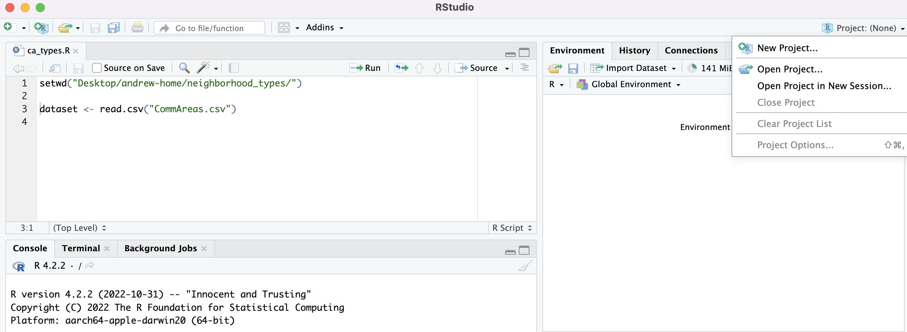 If you click “New Project”, a dialog box will open up which allows you to specify project options:
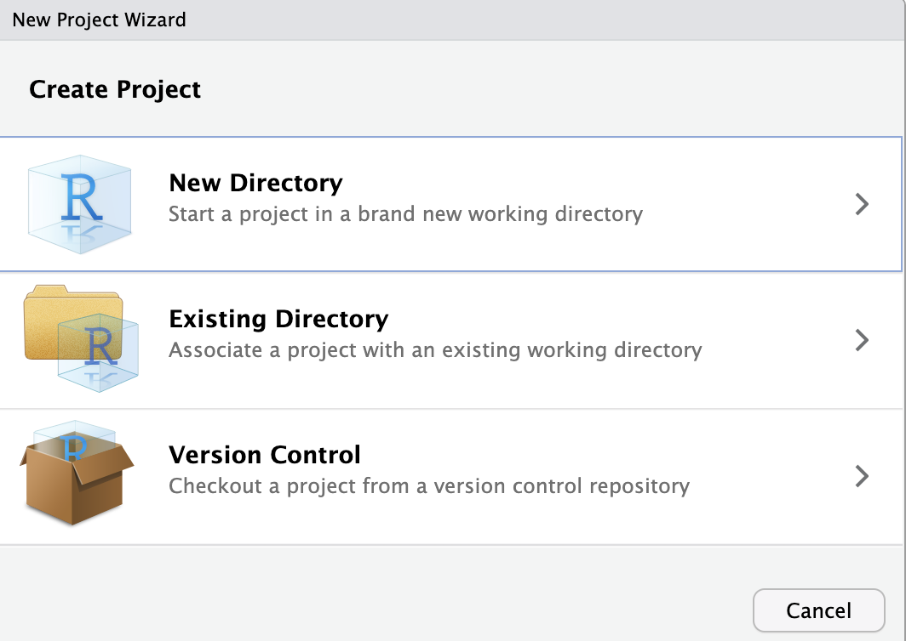
You have options here - you can either create a new project in a new folder, use an existing folder which you’ve already created, or check a project out from Github or another vesion control system. Since we already have a directory we’ve been working out of, we can use the existing directory dialog, and then set the directory where our script and data are located.
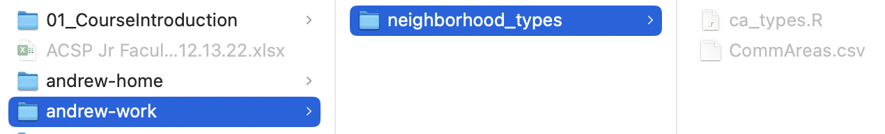
From here, so long as we open our work by clicking on the project file, we’ll be taken into the project which will remember what the “home” directory is for our work. 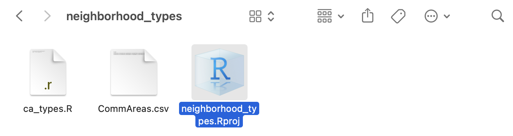
The benefit of this approach is that if we move our project directory to another computer and open our project, R understands that the folder with the project file reflects the relative path to where we will find the other files referenced in our project. This means that if we share our working folder with others, they can reproduce what we did so long as all files are contained within that project directory.
Project files represent mileposts that set the relative path at which RStudio will look for files within our particular project. This is useful for creating a project file structure within which we can create reproducible and easily shareable analysis. You should be in the habit of starting each new analysis you do by setting up a new work folder with a new project file.
Each time you close your RStudio session, you will be faced with a temptation - RStudio will ask whether you want to save your workspace.
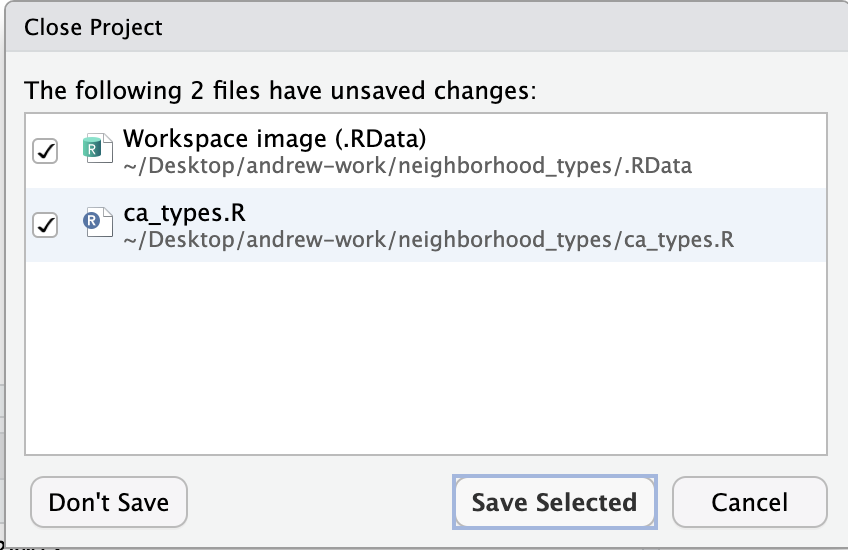
What’s the difference between a script, a project, and a workspace? A script contains the code which tells R what you want it to do. Script commands are run in the console in the order they are written. You want to get in the habit of saving your script files often. Your project file tells R the path to look for files and folders at. This sets a relative path for your work in that project. A workspace file saves the exact image of what’s going on when you close out of RStudio - that may include loaded datasets, functions, and objects.
You have likely been tempted to save your workspace when you are closing your R session. While tempting, I encourage you not to get in the habit of saving your workspace. This runs counter to most other interactions you’ve had with computers - saving documents, video games, or survey responses. Saving your workspace can lead to bad habits with regards to reproducibility. You want to allow your scripts to serve as a repository for all steps that go from your raw data to your analysis and outputs. Unless your script has time or computationally intensive steps, your scripts and computer can re-run your workflow to return to the point that you left off when you last worked on the project.
Each project you create should have it’s own directory which will be a folder with a descriptive file name. This root folder will contain a directory structure which allows you to organize your data and workflows. There’s no standardized format which this directory structure has to take, however there are some useful principles that will help you stay organized.
Use subdirectories to stay organized. While R doesn’t care whether your project directory contains subdirectories, subdirectories are useful for keeping track of your files. As you build out increasingly complicated projects, you will likelly generate lots of data, metadata, scripts, and outputs. Subdirectories can help you to keep all of this information organized, and will make it easier for others to navigate your project.
Keep raw and processed data separate. We want to set up workflows that allow us to consistently be able to transition from raw data to processed data, to outputs (that will end up in our outputs folder). If our project relied upon locally stored datasets, raw data should be placed in a separate folder for raw data. After it exists, raw data should only be read - it shouldn’t be written to. Depending upon the considerations of your workflow, you may want to create a separate folder for processed data - unlike your raw data folder, you may both read and write data to this folder.
Maintain a local copy of data documentation. Whenever possible, download or include data documentation to go along with your raw data. This will be useful to refer to as you’re working, and will also help others who make work on the project in the future. As you modify data and create your own datasets, you should also consider creating documentation for your working data. Again, this will help you or others in the future.
Outputs get their own subdirectory. Outputs may include tables, graphics, or any other output created by your analysis. Depending upon the quantity of outputs, you may choose to add additional subdirectories to your output folder to help organize your outputs.
Order your scripts. In addition to creating a dedicated subdirectory for your scripts, consider naming them in such a way that they are ordered and follow your data workflow. You may also want to develop a master script that sequentially runs your other scripts. You can use source() in this master script to run other scripts.
Quarto Markdown gets its own subdirectory. Depending upon the complexity of your project, it may be useful to creata a directory for any Quarto Markdown documents you create.
Your base project directory and structure will end up looking something like this:
Root
|
|_ data
| |_ data_raw
| |_ data_processed
|
|_ documentation
|_ output
|_ scripts
| |_ 01_master.r
| |_ 02_get_data.r
| |_ 03_plots.r
|_ quartoAgain, there’s no standardized format which your directory structure has to take. Your structure may also change depending upon the specific considerations and workflows involved for a given project. Over time, you’ll develop a default folder structure that makes sense for how you tend to work.
When we assess your work in UP 570, we will be looking for evidence that you are making effective use of project directory structures. Unless we state so, there’s no required directory structure format, however, we want to see you applying principles of good directory management in your work.
After we create our project directory and create a r project file, we can programmatically create our directory structure using the dir.create() command. For example:
We could also save ourselves repetition in our code using the base R lapply() syntax. We create a list with our project directory names and assign that into an object. We then feel lapply() the list along with the function we wish to apply to each element of that list - in this case, dir.create():
While a lot of our coding can be done directly in Quarto Markdown documents, you’ll also want to use scripts to store code and develop workflows that may eventually be represented as output in your Quarto document. Script headers can help to organize the work we do in scripts, and can help when we get ready to share our work with others or pick up work on files we have not looked at in a while.
Taking a few extra minutes to develop a nice script header will be beneficial in the future - your future self, your collaborators, and others who use your code will appreciate it!
Like so many other R things, there’s no standardized example of what a script header needs to include, howevver, here’s a basic header template to start with:
# Title: [Insert script title here]
# Author: [Your name]
# Email: [Your email address]
# Date: [Insert date here]
# Script Name: [Script Name]
# Description: [Insert a brief description of the script and its purpose]
# Notes: [Insert any process notes or potential revision plans here]
# Set up the working environment
# Load required libraries
library(library1)
library(library2)
# Set global options
options(option1 = value1, option2 = value2)
# Define functions
function1 <- function(input1, input2) {
# function code goes here
}
function2 <- function(input1, input2) {
# function code goes here
}
# Main script
# End of scriptThe different elements here help record who coded the script, what it is designed to do, and provides a common place to set options, load packages, and define functions. Although these components could occur anywhere in the script before they are called upon, includig them in the header helps track what’s going on in the script.
While you could easily type out each element of your header every time that you develop a new script, you can also save your script as a code snippet within RStudio, which will allow you to easily insert the header template into new scripts you create.
This code snippet trick is paraphrased from the description provided by Dr. Timothy S. Farewell.
In RStudio, go to Tools -> Global Options -> Code -> Snippets -> Edit Snippets. This will bring up a block of code - scroll to the bottom.
Modify the below code header template to include your information and then copy / paste this into the snippets code block.
snippet header
# Title:
# Author:
# Email:
# Date:
# Script Name:
# Description:
# Notes:
# Working Environment Setup
# Load required libraries
load_packages <- c("tidyverse", "sf") # Add more packages here as needed
lapply(load_packages, library, character.only = TRUE)
# Set global options
# Define functions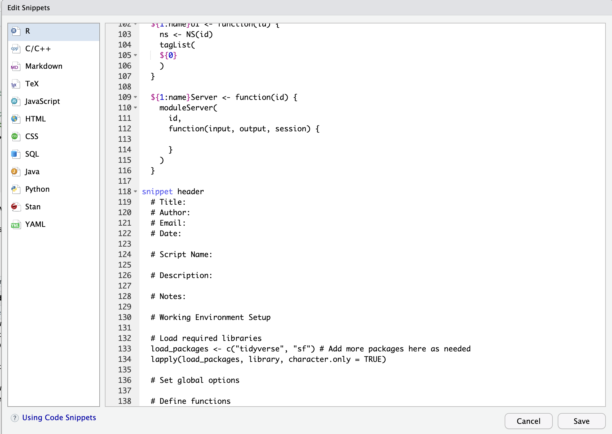 3. Save and close the window.
You have now added this snippet to your library. When you start a new script, simply type “header” and press tab and RStudio will fill in your header template.
Snippets are handy - you may soon identify other common bits of code that you use frequently that you want to make snippets out of.
As mentioned in the Project Organization Principles section, it’s important to spend a little time thinking about conventions for your filenames. Some useful principles:
This date format (yyy-mm-dd) conforms to ISO 8601 format.
Quarto is a tool built into RStudio which allows you to create a variety of documents that can integrate plain text and code. It’s utility comes both in it’s ability to translate plain text into a variety of well-formatted outputs, but also due to the ease with which we can use this format to share code, analysis, and writing with others. Most of your written assignments in class will be produced in Quarto, therefore, you’ll want to become familiar with the basic syntax and logic.
Quarto’s plain text formatting is handled using Markdown syntax which is designed to be simple, easily interpreted as text with formatting in place, and readable on most computers. An increasing number of note systems and word processors have adopted Markdown as their language.
Quarto makes use of a modified version of Markdown syntax. The Quarto website maintains excellent documentation regarding basic markdown formatting options as well as Quarto-specific formatting options:
You should familiarize yourself with how to format text, how to use section headings, and how to link files and insert references to other files.
Quarto can help you either manage references in very sinple ways or more complex ways. You can either add references directly to your text as either footnotes or endnotes.
We oftentimes use footnotes as an easy way to convey references or links to details or important information that does not need to be in our main body of text. Quarto allows you to create both footnotes and long notes. Footnotes are typically short and take up only a line or two. Long notes are longer and may contain multiple paragraphs.
Here is some text with a footnote.[^1]
[^1]: And here is the footnote that accompanies that text in the footnotes section.
Here is also some text with an inline footnote.^[Here is the text associated with the inline footnote - this may be easier to track because it is in line with the text.]
Here is some text with a longnote.[^longnote]
[^longnote]: And here is a longnote that takes up multiple lines. You can experiment in your text to see whether a footnote or longnote will serve you better for a given situation.
This text is also part of the long note - the indent signals that it remains part of the note.
And this text would be part of the next paragraph that's outside of the note because it is not indented.Here is some text with a footnote1
Here is also some text with an inline footnote.2
Here is some text with a longnote3
And this text would be part of the next paragraph that’s outside of the note because it is not indented.
You can also add asides to documents which places a note in line with text in the margin.
For a very effective example of asides, see Kieran Healy’s book Data Visualization: A Practical Introduction.
Here is an aside placed in line with text in the margin.
For longer or more advanced documents, you may wish to rely upon Quarto’s suppot for using and managing references with BibTex, a standard reference format. This allows you to add references to your document and then create in line citations and a formatted bibliography to accompany your writing.
In order to create a bibliography that is associated with a document, you’ll need three files:
A main file written in Quarto Markdown (.qmd). This file will be formatted to include citation references.
A bibliographic data source, typically a Bibtex (.bibtex) file.
A csl file - this specifies the format for your bibliography. You can find and include different csl files to produce a bibliography using different reference styles.
Using a text editor, create a plain text file that will contain your bibliographic references. In this case, we’ll create a text file called “references.bib”. Note that this file should end in .bib to signify that it is a bibliographic reference file.
Next, in your Quarto Markdown document, you’ll add a line to your YAML header that refers to the location and name of your bibliography file.
Like most other reference management systems, you can define what reference syle your references will be rendered as, and change this as needed. The Citation Style Language (CSL) project defines a common language and structure for styles. These are stored in .csl files which you will associate with your document. You can find and download .csl files in a range of formats from the CSL Project’s repository.
You can also find and download csl files in Zotero’s style repository. If you hover over a style format, it provides examples of what a citation will look like in your redered document.
For the sake of example, we’ll format our document using American Psychological Association (APA) format. We’ll search the CSL Project’s repository to find an appropriate APA style .csl file. Once you find the appropriate file, then download the file and place it in the same directory as our .bib file.
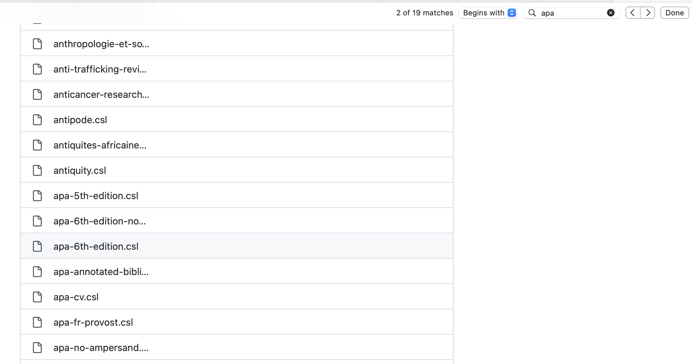 Click on the .csl style format you want to use. You’ll then be taken to a page that includes the specific file’s contents.
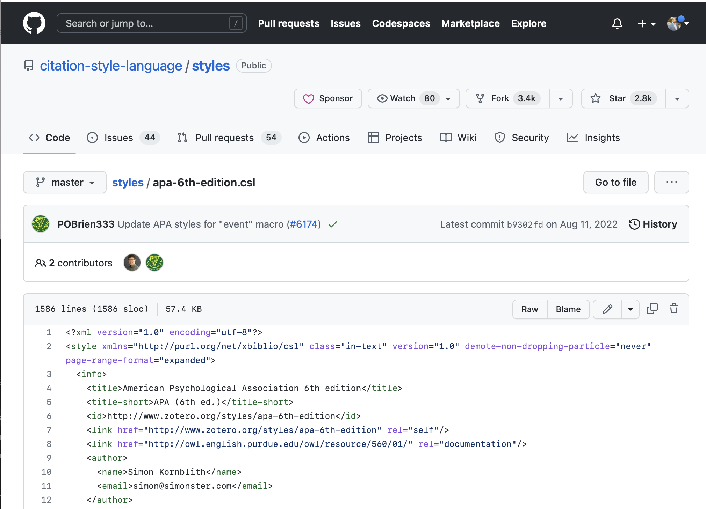
From here, you can right click on the button that says “raw” and download the .csl file.
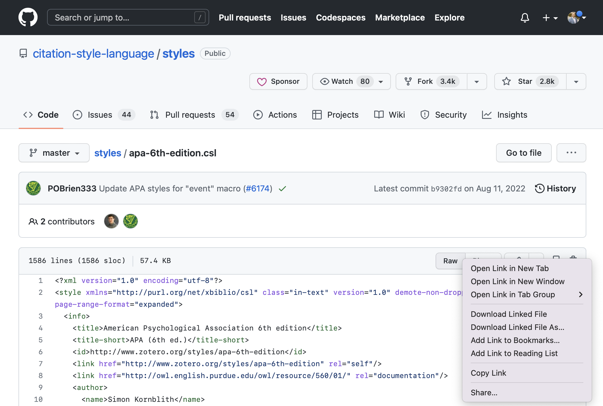 Note that before you move this file from your download folder to the folder where your .bib file is located, you may need to alter the file extension to indicate that this is a .csl file. Once you have done this, move it to the folder where your .bib file is located and then add a csl reference to your YAML header.
You’re now set up to add references to your document. You can add references in lots of different ways. If you’re searching for references using a service like Google Scholar, under the “cite” options for a given reference, you’ll see a URL to download the BibTeX citation associated with that reference.
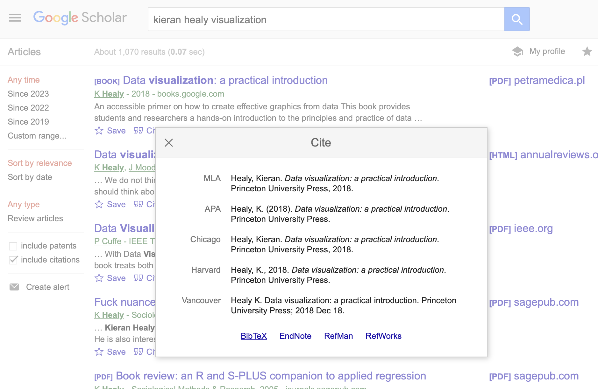 Click on BibTeX and the citation contents will show:
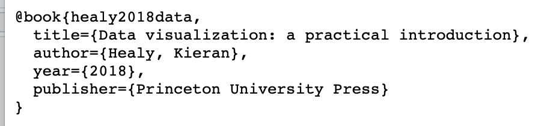
Copy this text, and paste it into your bibliographic reference file (in our example, references.bib).
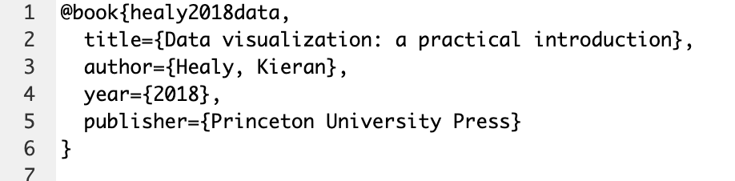
You can then cite this reference while you write by referring to it as follows:
(Healy, 2018) provides useful examples for leveraging GGPlot to create data visualization.
Note that the actual reference corresponds to the first clause in the bibtex reference.
You can change the reference name if you’d like to something you’ll remember as you cite.
You can paste more references into the same references.bib file and cite them as well.
You can find more details on formatting citations on the Quarto website.
Online tools like Citation Machine can help you to build references for a range of online sources. (Feder, n.d.) takes a little while to get used to, but these tools can help you to build out an effective citation workflow.
Quarto will automatically place your references at the end of your document (or wherever your style definition file calls for references to be placed). You can also explicitly tell Quarto where to place your references by creating a div as follows:
You should end up with a formatted reference section at the end of your document.
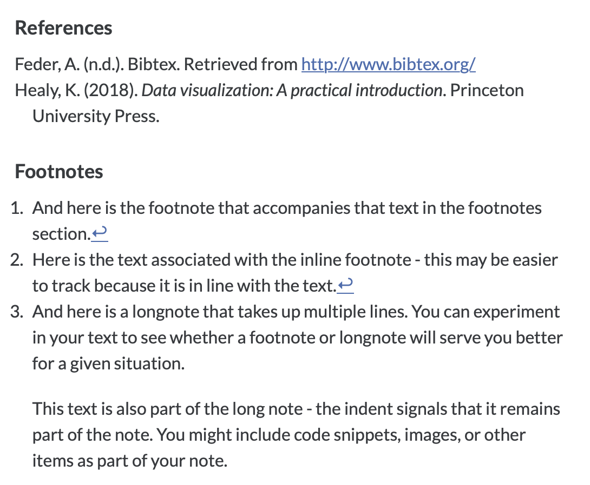
It’s ultimately up to you how you manage and generate references within your documents. If you have a document with very few references, footnotes and/or endnotes may be an appropriate strategy. A more complex document with many references may be better managed using BibTeX. You can also use another reference management system and then export citations in BibTeX format which can then be added to your Quarto Markdown document.
In evaluating your lab submission, we’ll be paying attention to the following:
As you get into the lab, please feel welcome to ask us questions, and please share where you’re struggling with us and with others in the class.
And here is the footnote that accompanies that text in the footnotes section.↩︎
Here is the text associated with the inline footnote - this may be easier to track because it is in line with the text.↩︎
And here is a longnote that takes up multiple lines. You can experiment in your text to see whether a footnote or longnote will serve you better for a given situation.
This text is also part of the long note - the indent signals that it remains part of the note. You might include code snippets, images, or other items as part of your note.
Creating footnotes is easy^[So long as you remember the correct syntax.]This text would also be part of your long note.↩︎
---
title: "Building a Data Pipeline"
sidebar: false
toc: true
toc-depth: 4
page-layout: full
bibliography: 01_datapipeline/references.bib
csl: 01_datapipeline/apa-6th-edition.csl
format:
html:
code-fold: show
code-overflow: wrap
code-tools:
source: true
toggle: false
caption: none
fig-responsive: true
editor: visual
---
## Introduction
In this lab, we'll explore some of the basic workflows which we'll use over the course of the semester to package and share analysis. A primary principle of our class is that our analysis be *reproducible* by others - this is an important prnciple both for supporting the *validity* of our arguments, and also *accountability* to those neighborhoods and communities we are analyzing and to the broader audience who may use our work in their deliberation or who might adapt our workflows to address similar questions in their areas of focus.
Our class will focus on developing data analysis and sharing pipelines that make use of R and RStudio's core functions. We'll gain familiarity with RStudio's Quarto format which allows for the integration of plain text, code, and code output in the same documents and which is focused on easily translating text and code into multiple output formats. We'll also become more familiar with Github, which we'll use as a tool to share code and analysis.
## Goals
- Become familiar with core programmatic ways to manipulate files in R and RStudio.
- Become familiar with the core features and outputs related to Quarto.
- Set up your computer so that RStudio can communicate with your Github account.
## Core Concepts
### R and Rstudio
- Project
- Working Directory
- Workspace
- Quarto Markdown
Let's get going...
## Github Lab Repository
If you have not already done so, follow [this link](https://classroom.github.com/a/TzkeNAie) to accept the lab Github Classroom assignment repository.
## Workflow 1: Set up a New Project
The first workflow we need to develop is proper project setup in R. In our next lab, we'll add some more complexity to this project setup by incorporating version control and sharing, but we'll start by getting a handle on projects that reside on our local computer. Let's start with a quick review of file system and structure, and then transition into the nuts and bolds of project setup.
### File System and Structure
::: column-page-inset-left
When you started learning R and RStudio, you likely struggled a bit with some of the core concepts related to how R views your computer's file system and where it looks for files and stores work. There's nothing to complex about what R is doing, but as computers have become better at making sensible decisions for us, it can be easy to lose track of some of the basics of how we need to set up file structures that help us to actively manage our workflows and outputs.
There are a few basics which we need to have down. The first is a gentle reminder about how computer file systems work. Back when I was a kid in the early 1980s, the primary way we interacted with computers was at the command line. When you started a computer, you might be greeted with something that looks like the terminal tab in your RStudio session:
 From here, you'd type commands to either navigate between directories, list files in a directory, or execute files. For instance, we can use `ls` to list all the files in my home directory: 
And then take a look at the results: 
Which is the equivalent of looking at what files are in my computer's home directory in a graphical user interface: 
While for the most part we wont be bothered with accessing our file system this way, it's useful to understand what's going on with the pathnames that are shown. Whether you're used to working with Mac, PC, or Linux operating systems, the approach to file systems is sufficiently similar to talk about them all together.
Most modern operating systems operate using *relative* pathnames which allow us to be more efficient in referencing where files are located in our computer. The path that you saw above on my computer points to the "home directory" which is the base directory associated with my user account on the computer. My home director is situated however within other directories that are part of the operating system and that are ultimately on a hard disk drive.
 So why is all of this important? This underscores the rationale for and utility of relative paths in our filesystem. My mac computer's home directory is `Machinsosh HD/Users/andrewgreenlee/` which means that rather than having to type out all of that content, I can just start instructions to paths beloww that directory. For instance, let's navigate to my desktop folder: 
Which is the same as navigating from the root folder of our hard drive to the desktop folder: 
This certainly makes things more convenient for navigating files in Terminal and in our file system. It has a much deeper utulity when we are thinking about reproducible data analysis. Let's explore in more detail.
### Directory Structure and R
Oftentimes when people begin learning in R and RStudio, they simply open the program and start typing commands. This works well up until the point when one needs to get data into or out of R. In general, R is agnostic about where to look for files - if you open RStudio without specifying where to look for files, it assumes you want to work out of your home directory (the `getwd()` command returns the current working directory R is using): 
We typically do not want to work out of our home directory, but would like to set another directory to work out of. When new R users start to work in R, many are taught to use `setwd()` to explicitly set a directory to work out of. This will work, and sets a "home" directory for the particular work you are doing.
```{r}
#| eval: false
setwd("Desktop/andrew-home/neighborhood_types/")
```
For the sake of illustration, let's say we wnat to open a dataset containing a list of community area definitions for Chicago:
```{r}
#| eval: false
dataset <- read.csv("CommAreas.csv")
dataset
```
We create a script in our working directory that sets the directory, reads the file, and then shows the file to us.
What happens when you move your working folder to another computer or share it? If you explicitly set your working directory, it won't be able to access that directory which is at a path that doesn't exist on your other computer:
 R Projects help us to address this problem. Projects add a file to the folder we wish to set as our home directory for our project which establishes where R will look for files.
In the right top corner of your RStudio window, you'll note a blue cube which leads to a project management menu:
 If you click "New Project", a dialog box will open up which allows you to specify project options:

You have options here - you can either create a new project in a new folder, use an existing folder which you've already created, or check a project out from Github or another vesion control system. Since we already have a directory we've been working out of, we can use the existing directory dialog, and then set the directory where our script and data are located.

From here, so long as we open our work by clicking on the project file, we'll be taken into the project which will remember what the "home" directory is for our work. 
The benefit of this approach is that if we move our project directory to another computer and open our project, R understands that the folder with the project file reflects the *relative* path to where we will find the other files referenced in our project. This means that if we share our working folder with others, they can reproduce what we did so long as all files are contained within that project directory.
Project files represent mileposts that set the relative path at which RStudio will look for files within our particular project. This is useful for creating a project file structure within which we can create reproducible and easily shareable analysis. You should be in the habit of starting each new analysis you do by setting up a new work folder with a new project file.
### Projects vs. Workspaces
Each time you close your RStudio session, you will be faced with a temptation - RStudio will ask whether you want to save your workspace.

What's the difference between a script, a project, and a workspace? A script contains the code which tells R what you want it to do. Script commands are run in the console in the order they are written. You want to get in the habit of saving your script files often. Your project file tells R the path to look for files and folders at. This sets a relative path for your work in that project. A workspace file saves the exact image of what's going on when you close out of RStudio - that may include loaded datasets, functions, and objects.
You have likely been tempted to save your workspace when you are closing your R session. While tempting, I encourage you **not** to get in the habit of saving your workspace. This runs counter to most other interactions you've had with computers - saving documents, video games, or survey responses. Saving your workspace can lead to bad habits with regards to reproducibility. You want to allow your scripts to serve as a repository for all steps that go from your raw data to your analysis and outputs. Unless your script has time or computationally intensive steps, your scripts and computer can re-run your workflow to return to the point that you left off when you last worked on the project.
::: aside
Later in the class, we'll introduce more powerful strategies like the [renv](https://rstudio.github.io/renv/articles/renv.html) and [targets](https://books.ropensci.org/targets/) packages which can help to manage your workflows and their dependencies.
:::
:::
### Project Setup
Each project you create should have it's own directory which will be a folder with a descriptive file name. This root folder will contain a directory structure which allows you to organize your data and workflows. There's no standardized format which this directory structure has to take, however there are some useful principles that will help you stay organized.
#### Project Organization Principles {#project-organization-principles}
1. **Use subdirectories to stay organized.** While R doesn't care whether your project directory contains subdirectories, subdirectories are useful for keeping track of your files. As you build out increasingly complicated projects, you will likelly generate lots of data, metadata, scripts, and outputs. Subdirectories can help you to keep all of this information organized, and will make it easier for others to navigate your project.
2. **Keep raw and processed data separate.** We want to set up workflows that allow us to consistently be able to transition from raw data to processed data, to outputs (that will end up in our outputs folder). If our project relied upon locally stored datasets, raw data should be placed in a separate folder for raw data. After it exists, raw data should only be *read* - it shouldn't be *written to*. Depending upon the considerations of your workflow, you may want to create a separate folder for processed data - unlike your raw data folder, you may both read and write data to this folder.
3. **Maintain a local copy of data documentation.** Whenever possible, download or include data documentation to go along with your raw data. This will be useful to refer to as you're working, and will also help others who make work on the project in the future. As you modify data and create your own datasets, you should also consider creating documentation for your working data. Again, this will help you or others in the future.
4. **Outputs get their own subdirectory.** Outputs may include tables, graphics, or any other output created by your analysis. Depending upon the quantity of outputs, you may choose to add additional subdirectories to your output folder to help organize your outputs.
5. **Order your scripts.** In addition to creating a dedicated subdirectory for your scripts, consider naming them in such a way that they are ordered and follow your data workflow. You may also want to develop a master script that sequentially runs your other scripts. You can use `source()` in this master script to run other scripts.
6. **Quarto Markdown gets its own subdirectory.** Depending upon the complexity of your project, it may be useful to creata a directory for any Quarto Markdown documents you create.
Your base project directory and structure will end up looking something like this:
Root
|
|_ data
| |_ data_raw
| |_ data_processed
|
|_ documentation
|_ output
|_ scripts
| |_ 01_master.r
| |_ 02_get_data.r
| |_ 03_plots.r
|_ quarto
Again, there's no standardized format which your directory structure has to take. Your structure may also change depending upon the specific considerations and workflows involved for a given project. Over time, you'll develop a default folder structure that makes sense for how you tend to work.
::: important
When we assess your work in UP 570, we will be looking for evidence that you are making effective use of project directory structures. Unless we state so, there's no required directory structure format, however, we want to see you applying principles of good directory management in your work.
:::
#### Project Organization Workflows
After we create our project directory and create a r project file, we can programmatically create our directory structure using the `dir.create()` command. For example:
```{r}
#| eval: false
#| error: false
#| warning: false
# Create project subdirectories
dir.create("data")
dir.create("data/data_raw")
dir.create("data/data_processed")
dir.create("documentation")
dir.create("output")
dir.create("scripts")
dir.create("quarto")
```
We could also save ourselves repetition in our code using the base R `lapply()` syntax. We create a list with our project directory names and assign that into an object. We then feel `lapply()` the list along with the function we wish to apply to each element of that list - in this case, `dir.create()`:
```{r}
#| eval: false
#| error: false
#| warning: false
# Create project subdirectories
project_dirs <- c("data", "data/data_raw", "data/data_processed", "documentation", "output", "scripts", "quarto")
lapply(project_dirs, dir.create)
```
#### Script Headers and Structure
While a lot of our coding can be done directly in Quarto Markdown documents, you'll also want to use scripts to store code and develop workflows that may eventually be represented as output in your Quarto document. Script headers can help to organize the work we do in scripts, and can help when we get ready to share our work with others or pick up work on files we have not looked at in a while.
Taking a few extra minutes to develop a nice script header will be beneficial in the future - your future self, your collaborators, and others who use your code will appreciate it!
Like so many other R things, there's no standardized example of what a script header needs to include, howevver, here's a basic header template to start with:
```{r}
#| eval: false
#| error: false
#| warning: false
# Title: [Insert script title here]
# Author: [Your name]
# Email: [Your email address]
# Date: [Insert date here]
# Script Name: [Script Name]
# Description: [Insert a brief description of the script and its purpose]
# Notes: [Insert any process notes or potential revision plans here]
# Set up the working environment
# Load required libraries
library(library1)
library(library2)
# Set global options
options(option1 = value1, option2 = value2)
# Define functions
function1 <- function(input1, input2) {
# function code goes here
}
function2 <- function(input1, input2) {
# function code goes here
}
# Main script
# End of script
```
The different elements here help record who coded the script, what it is designed to do, and provides a common place to set options, load packages, and define functions. Although these components could occur anywhere in the script before they are called upon, includig them in the header helps track what's going on in the script.
While you could easily type out each element of your header every time that you develop a new script, you can also save your script as a *code snippet* within RStudio, which will allow you to easily insert the header template into new scripts you create.
::: aside
This code snippet trick is paraphrased from the description provided by [Dr. Timothy S. Farewell](https://timfarewell.co.uk/my-r-script-header-template/).
:::
1. In RStudio, go to Tools -\> Global Options -\> Code -\> Snippets -\> Edit Snippets. This will bring up a block of code - scroll to the bottom.
2. Modify the below code header template to include your information and then copy / paste this into the snippets code block.
```{r}
#| eval: false
#| error: false
#| warning: false
snippet header
# Title:
# Author:
# Email:
# Date:
# Script Name:
# Description:
# Notes:
# Working Environment Setup
# Load required libraries
load_packages <- c("tidyverse", "sf") # Add more packages here as needed
lapply(load_packages, library, character.only = TRUE)
# Set global options
# Define functions
```
 3. Save and close the window.
You have now added this snippet to your library. When you start a new script, simply type "header" and press tab and RStudio will fill in your header template.
::: aside
Snippets are handy - you may soon identify other common bits of code that you use frequently that you want to make snippets out of.
:::
#### Naming Files
As mentioned in the [Project Organization Principles](#project-organization-principles) section, it's important to spend a little time thinking about conventions for your filenames. Some useful principles:
1. Avoid using special characters (for instance, \\ / : \* ? " \< \> \|) in file names.
2. Do not use spaces in filenames. You may use an underscore (e.g. map_census_tracts.png) to help with readability.
3. If you choose to use dates as part of your filename, order them yyy-mm-dd (e.g. 20230102 would be January 2, 2023). If you have multiple versions of the file from different dates, this ensures that your files will be properly ordered by the date.
::: aside
This date format (yyy-mm-dd) conforms to [ISO 8601 format](https://en.wikipedia.org/wiki/ISO_8601#Calendar_dates).
:::
4. When creating ordered lists for file names (ordered by number) use at least two digits (e.g. "01_Main", "02_Download", "03_Map"). This will keep your files in order once you get past 10.
## Workflow 2: Working in Quarto
Quarto is a tool built into RStudio which allows you to create a variety of documents that can integrate plain text and code. It's utility comes both in it's ability to translate plain text into a variety of well-formatted outputs, but also due to the ease with which we can use this format to share code, analysis, and writing with others. Most of your written assignments in class will be produced in Quarto, therefore, you'll want to become familiar with the basic syntax and logic.
Quarto's plain text formatting is handled using [Markdown syntax](https://www.markdownguide.org/getting-started/) which is designed to be simple, easily interpreted as text with formatting in place, and readable on most computers. An increasing number of note systems and word processors have adopted Markdown as their language.
::: aside
Some examples include [Bear](https://bear.app), [Obsidian](https://obsidian.md), [Notion](https://www.notion.so), [Ulysses](https://ulysses.app). Mentions are not endorsements.
:::
### Formatting Your Documents
Quarto makes use of a modified version of Markdown syntax. The [Quarto website](https://quarto.org/docs/authoring/markdown-basics.html) maintains excellent documentation regarding basic markdown formatting options as well as Quarto-specific formatting options:
```{=html}
<iframe width="780" height="500" src="https://quarto.org/docs/authoring/markdown-basics.html" title="Quarto Formatting"></iframe>
```
You should familiarize yourself with how to format text, how to use section headings, and how to link files and insert references to other files.
### Adding References
Quarto can help you either manage references in very sinple ways or more complex ways. You can either add references directly to your text as either footnotes or endnotes.
#### Footnotes
We oftentimes use footnotes as an easy way to convey references or links to details or important information that does not need to be in our main body of text. Quarto allows you to create both footnotes and long notes. Footnotes are typically short and take up only a line or two. Long notes are longer and may contain multiple paragraphs.
``` markdown
Here is some text with a footnote.[^1]
[^1]: And here is the footnote that accompanies that text in the footnotes section.
Here is also some text with an inline footnote.^[Here is the text associated with the inline footnote - this may be easier to track because it is in line with the text.]
Here is some text with a longnote.[^longnote]
[^longnote]: And here is a longnote that takes up multiple lines. You can experiment in your text to see whether a footnote or longnote will serve you better for a given situation.
This text is also part of the long note - the indent signals that it remains part of the note.
And this text would be part of the next paragraph that's outside of the note because it is not indented.
```
Here is some text with a footnote[^1]
[^1]: And here is the footnote that accompanies that text in the footnotes section.
Here is also some text with an inline footnote.[^2]
[^2]: Here is the text associated with the inline footnote - this may be easier to track because it is in line with the text.
Here is some text with a longnote[^3]
[^3]: And here is a longnote that takes up multiple lines. You can experiment in your text to see whether a footnote or longnote will serve you better for a given situation.
This text is also part of the long note - the indent signals that it remains part of the note. You might include code snippets, images, or other items as part of your note.
Creating footnotes is easy^[So long as you remember the correct syntax.]
This text would also be part of your long note.
And this text would be part of the next paragraph that's outside of the note because it is not indented.
#### Asides
You can also add asides to documents which places a note in line with text in the margin.
::: aside
For a very effective example of asides, see Kieran Healy's book [*Data Visualization: A Practical Introduction*](https://socviz.co/gettingstarted.html#work-in-plain-text-using-rmarkdown).
:::
``` markdown
:::{.aside}
Here is an aside placed in line with text in the margin.
:::
```
::: aside
Here is an aside placed in line with text in the margin.
:::
#### Citations and Bibliographies
For longer or more advanced documents, you may wish to rely upon Quarto's suppot for using and managing references with BibTex, a standard reference format. This allows you to add references to your document and then create in line citations and a formatted bibliography to accompany your writing.
In order to create a bibliography that is associated with a document, you'll need three files:
1. A main file written in Quarto Markdown (.qmd). This file will be formatted to include citation references.
2. A bibliographic data source, typically a Bibtex (.bibtex) file.
3. A `csl` file - this specifies the format for your bibliography. You can find and include different csl files to produce a bibliography using different reference styles.
##### Step 1: Create a bibliography file.
Using a text editor, create a plain text file that will contain your bibliographic references. In this case, we'll create a text file called "references.bib". Note that this file should end in `.bib` to signify that it is a bibliographic reference file.
##### Step 2: Refer to the bibliography file in your YAML Header
Next, in your Quarto Markdown document, you'll add a line to your YAML header that refers to the location and name of your bibliography file.
```{yaml}
---
title: "Neighborhood Analysis: Place Selection Memorandum"
bibliography: references.bib
---
```
##### Step 3: Define a citation style
Like most other reference management systems, you can define what reference syle your references will be rendered as, and change this as needed. The [Citation Style Language (CSL) project](https://citationstyles.org) defines a common language and structure for styles. These are stored in `.csl` files which you will associate with your document. You can find and download .csl files in a range of formats from the CSL Project's [repository](https://github.com/citation-style-language/styles).
::: aside
You can also find and download csl files in Zotero's [style repository](https://www.zotero.org/styles). If you hover over a style format, it provides examples of what a citation will look like in your redered document.
:::
For the sake of example, we'll format our document using American Psychological Association (APA) format. We'll search the CSL Project's repository to find an appropriate APA style .csl file. Once you find the appropriate file, then download the file and place it in the same directory as our .bib file.
 Click on the .csl style format you want to use. You'll then be taken to a page that includes the specific file's contents.

From here, you can right click on the button that says "raw" and download the .csl file.
 Note that before you move this file from your download folder to the folder where your .bib file is located, you may need to alter the file extension to indicate that this is a .csl file. Once you have done this, move it to the folder where your .bib file is located and then add a csl reference to your YAML header.
```{yaml}
---
title: "Neighborhood Analysis: Place Selection Memorandum"
bibliography: references.bib
csl: apa-6th-edition.csl
---
```
##### Step 4: Add references to your document
You're now set up to add references to your document. You can add references in lots of different ways. If you're searching for references using a service like Google Scholar, under the "cite" options for a given reference, you'll see a URL to download the BibTeX citation associated with that reference.
 Click on BibTeX and the citation contents will show:

Copy this text, and paste it into your bibliographic reference file (in our example, references.bib).

You can then cite this reference while you write by referring to it as follows:
```{markdown}
[@healy2018data] provides useful examples for leveraging GGPlot to create data visualization.
```
[@healy2018data] provides useful examples for leveraging GGPlot to create data visualization.
Note that the actual reference corresponds to the first clause in the bibtex reference.
::: aside
You can change the reference name if you'd like to something you'll remember as you cite.
:::
You can paste more references into the same references.bib file and cite them as well.
::: aside
You can find more details on formatting citations on the [Quarto website](https://quarto.org/docs/authoring/footnotes-and-citations.html#sec-citations).
:::
Online tools like [Citation Machine](https://www.citationmachine.net/bibtex/cite-a-website) can help you to build references for a range of online sources. [@feder] takes a little while to get used to, but these tools can help you to build out an effective citation workflow.
##### Step 5: Place your bibliography
Quarto will automatically place your references at the end of your document (or wherever your style definition file calls for references to be placed). You can also explicitly tell Quarto where to place your references by creating a div as follows:
```{markdown}
## References
::: {#refs}
:::
```
You should end up with a formatted reference section at the end of your document.

### Reference Considerations
It's ultimately up to you how you manage and generate references within your documents. If you have a document with very few references, footnotes and/or endnotes may be an appropriate strategy. A more complex document with many references may be better managed using BibTeX. You can also use another reference management system and then export citations in BibTeX format which can then be added to your Quarto Markdown document.
## Lab Evaluation
In evaluating your lab submission, we'll be paying attention to the following:
1. Implementing best practices in root directory structure, file naming, and organization.
2. Formatting of a script file including the implementation of a header.
3. Formatting of the Quarto Markdown document to refer to analytic output and which uses formatting features to structure the document.
4. A brief but appropriate description of population change in Chicago Community Areas.
5. Implementation of a bibliography using the MLA format in your Quarto Markdown file.
As you get into the lab, please feel welcome to ask us questions, and please share where you're struggling with us and with others in the class.
## References